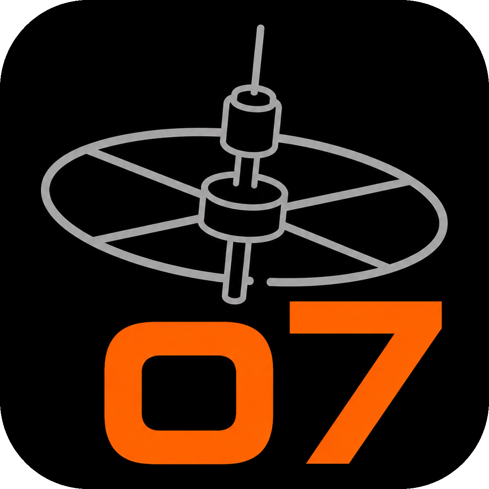
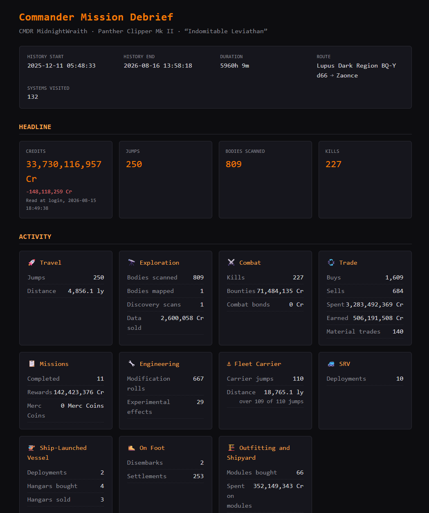
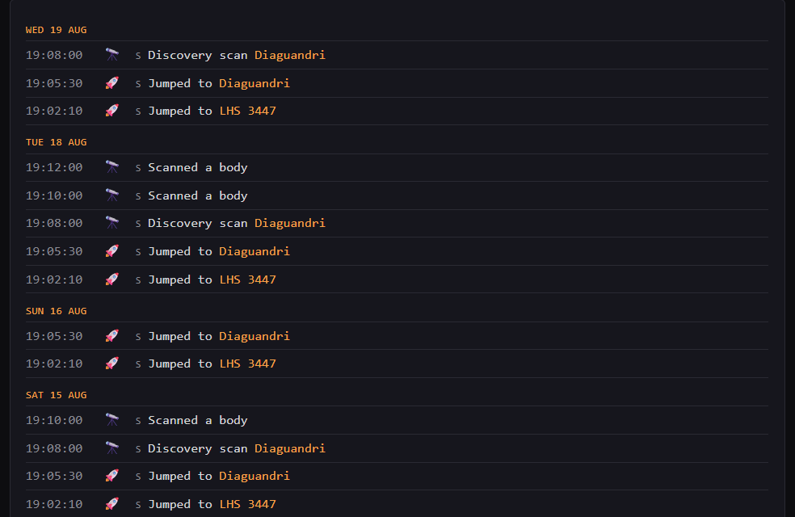
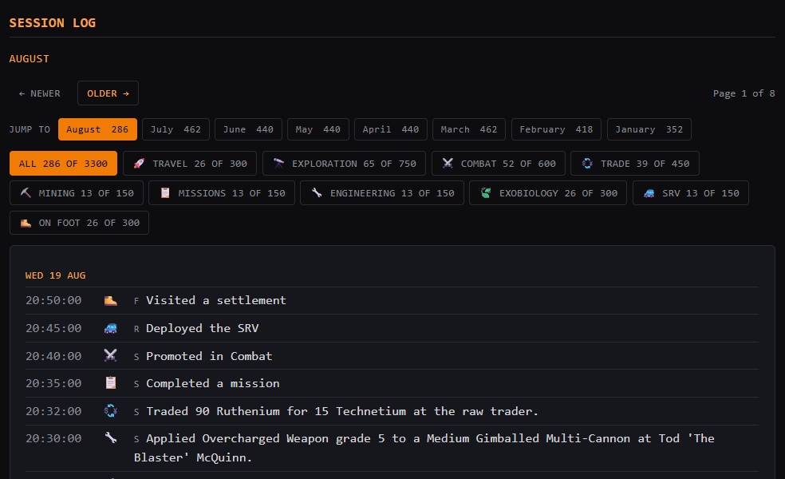

o7 DebriefEverything o7 Debrief does, card by card. Every figure traces back to a real journal entry; the example output below shows the finished debrief.
Follows the active journal in the background and generates a debrief automatically when you shut the game down. A session that ends in a crash is not debriefed by itself; Debrief my last session still covers it.
Cold one-shot mode reports your last session or your whole history to date, even if the app was not running while you played.
Every credit, jump and scan maps to a real entry in your journal, so the figures are verifiable and never guessed, inferred or padded. A figure the journal never stated is never printed as zero: where the slot must hold something it says there was no reading; where nothing has to occupy it the figure is simply left out.
The credit change is the difference between your balance at each end of the session, so a rebuy, an outfitting bill or a hold full of tritium counts against you exactly as it did in game. A session that ended poorer says so.
When the journal states only one balance it can state no change; saying so and stopping there tells you nothing. Beside the balance sits the total of every event the journal does price, income less outgoings, in a card of its own that says plainly it is not the balance change.
The journal states your balance when you log in and never again, so on a long session that figure is what you had when you sat down. The report prints the moment it was read beneath it, rather than letting a reading hours old pass for a current one.
Modules and ships bought and sold, counted and priced on each side rather than netted off, so a refit reads as the two things it was. Ship transfers get their own line, since a transfer buys nothing and still costs. Each one is a row in the log naming the item and the price.
The light years your ship covered, read from the distance each jump states. Your fleet carrier is measured too, worked out from where it arrived, since a carrier jump never records how far it came.
A session debrief is one self-contained file you can open in any browser or keep, plus a text version ready to paste onto Discord or Reddit.
A log covering several days heads each day with its date, so a history report reading 15:15 above 11:48 is plainly two days rather than a broken sort. A single session shows no dates and keeps its narrow time column. Times are the journal's own UTC, shown unconverted and labelled.
Years of play will not fit in one page, so the history debrief is a small set of pages: an index, a page per month and one shared stylesheet, opening from your own filesystem with no server and no scripts. It is rebuilt every time you quit and only the pages that actually changed are rewritten.
Tier-ups show at once and fractional rank percentages settle at the next launch, because the journal only snapshots progress at startup.
The header names your current ship and its type. A swap is logged as a session event naming the ship you left and the one you boarded; a purchase is logged naming the ship and what it cost.
Deploying, docking and losing the Nomad vessel or a fighter each appear as their own rows, naming the type from the journal loadout. Flying a fighter yourself is its own control mode; an NPC-crewed fighter leaves you in the ship.
A completed mission names itself and the faction that issued it. An Operation also shows the Merc Coins it paid, totalled apart from your credits because they are a different currency.
A bounty row names the ship you destroyed, whatever an NPC happened to be flying, so what you killed and what killed you both read as ship types.
If the journal never carried a field a figure depends on, a Notices block names the event and the field rather than letting the figure read as zero.
A death row names who died, the vehicle actually lost at that moment (an SRV, not the ship it launched from), the killer with their ship and squadron read from the targeting scan, then what the rebuy cost.
An engineering roll names the blueprint, the grade, the module and the engineer who applied it, so an evening of two hundred rolls reads as the work it was rather than two hundred identical lines. Applying an experimental effect is its own row and its own figure, because the journal reports it as a roll and it is not one. It reads in English too: the journal calls a module int_sensors_size5_class2 and the report calls it a 5D Sensors. Where the journal did not record something a row needs, the row says less rather than guessing.
Exchanges at the raw, manufactured and encoded traders are logged with both sides named, then counted in the Trade section. No credit figure is shown against them, because they cost no credits: you pay in materials.
Shortly after launch and once a day, the app asks GitHub anonymously whether a newer release exists; a Check for updates button on the home screen and a tray entry both do the same on demand. You choose Download, Skip this version or Later; it never downloads or runs anything without you choosing it.
No cloud, no account, no telemetry. Your journal never leaves your machine and the app needs no administrator rights to install. Nothing listens either: the app opens no port and accepts no connection, so the only network call it ever makes is the update check going out.

A debrief covering a commander's whole journal history. Open the full example report →

A log covering several days heads each day with its date. A single session shows none and keeps the narrow time column.

Every month is one click away and every tab counts the whole history rather than the page.